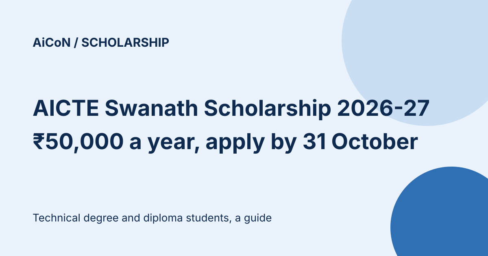

AICTE Swanath Scholarship 2026-27: ₹50,000 a year, apply on NSP by 31 October
AICTE's Swanath scholarship gives ₹50,000 a year to technical degree and diploma students who are orphans, lost a parent to Covid-19, or are wards of martyred armed forces personnel. A May 2025 guideline adds two more cases. Applications for 2026-27 are open on the National Scholarship Portal (NSP) until 31 October 2026.

What does it give?
₹50,000 per year of study, as a lump sum towards college fee, computer, stationery, books, equipment and software. It lasts up to 4 years for first-year degree students and 3 years for diploma students, and is shorter if you are already in a later year. There is no extra grant for hostel or medical charges. It is paid by Direct Benefit Transfer, and renewal is through NSP each year.
Who can apply?
| Category | Orphan; or one or both parents died due to Covid-19; or ward of armed forces or central paramilitary personnel martyred in action; or (per the 2025 guideline) a parent with a critical life-threatening illness, or who died or was more than 80% disabled in an accident. |
|---|---|
| Income | Family income from all sources not more than ₹8 lakh a year, with an income certificate from the State or UT. |
| Course | Currently studying in an AICTE-approved degree or diploma course, in regular mode, any year. |
| Not eligible | Anyone already getting a central, state or AICTE-sponsored scholarship. |
The guideline also bars other financial assistance such as a scholarship, salary, stipend or other emoluments during the course. It says receiving such assistance can end the scholarship and require repayment of the full amount to AICTE. Check this rule with your institute before applying.
Key dates on NSP
| Scheme open | 1 June 2026 |
|---|---|
| Student application | Until 31 October 2026 |
| Institute verification and defective applications | Until 15 November 2026 |
| District, state or ministry verification | Until 30 November 2026 |
How are awardees picked?
Solely on merit of the qualifying exam. For degree courses that is the percentage in Class XII or equivalent, with Class X marks, then age (elder ranks higher), then lower family income breaking ties. For diploma courses it is the Class X percentage, then age, then lower family income. Reservation follows Government of India norms.
A careful checklist
- Gather the documents for your category: death or shaheed certificate, or the Tehsildar or SDM orphan certificate, plus income certificate, bonafide certificate and mark sheets.
- Generate your One-Time Registration (OTR) on scholarships.gov.in. The guideline requires Aadhaar.
- Apply under the AICTE Swanath scheme for your level, degree or diploma, before 31 October 2026.
- Ask your institute to verify before 15 November 2026.
We did not log in or apply. We read the NSP scheme list, the AICTE scheme page and the May 2025 guideline PDF. The AICTE web page lists only three categories, while the guideline lists four, so check the category list on NSP before applying. The PDF document section gives checklists for the original three categories but no separate checklist for the new illness/accident category. Ask your institute which evidence NSP needs for that category.
Frequently asked questions
Is it only for first-year students?
No. Students in the 2nd, 3rd or 4th year can apply too, but the scholarship then runs for fewer years.
Sources: NSP scheme list, AICTE scheme page, Swanath guideline PDF. Checked 10 October 2026. This is an AiCoN explainer, not a government publication.